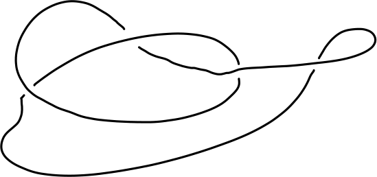
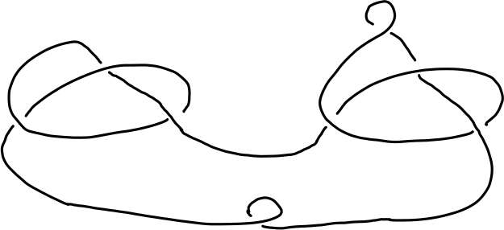

The following example uses the nonabelian tensor square of groups to compute the third homotopy group
π_3(S(K(G,1))) = Z^30
of the suspension of the Eigenberg-MacLane space K(G,1) for G the free nilpotent group of class 2 on four generators.
gap> F:=FreeGroup(4);;G:=NilpotentQuotient(F,2);; gap> ThirdHomotopyGroupOfSuspensionB(G); [ 0, 0, 0, 0, 0, 0, 0, 0, 0, 0, 0, 0, 0, 0, 0, 0, 0, 0, 0, 0, 0, 0, 0, 0, 0, 0, 0, 0, 0, 0 ]
The following example constructs the finitely presented quandles associated to the granny knot and square knot, and then computes the number of quandle homomorphisms from these two finitely prresented quandles to the 17-th quandle in HAP's library of connected quandles of order 24. The number of homomorphisms differs between the two cases. The computation therefore establishes that the complement in R^3 of the granny knot is not homeomorphic to the complement of the square knot.
gap> Q:=ConnectedQuandle(24,17,"import");; gap> K:=PureCubicalKnot(3,1);; gap> L:=ReflectedCubicalKnot(K);; gap> square:=KnotSum(K,L);; gap> granny:=KnotSum(K,K);; gap> gcsquare:=GaussCodeOfPureCubicalKnot(square);; gap> gcgranny:=GaussCodeOfPureCubicalKnot(granny);; gap> Qsquare:=PresentationKnotQuandle(gcsquare);; gap> Qgranny:=PresentationKnotQuandle(gcgranny);; gap> NumberOfHomomorphisms(Qsquare,Q); 408 gap> NumberOfHomomorphisms(Qgranny,Q); 24
The following commands compute a knot quandle directly from a pdf file containing the following hand-drawn image of the knot.

gap> gc:=ReadLinkImageAsGaussCode("myknot.pdf"); [ [ [ -2, 4, -1, 3, -3, 2, -4, 1 ] ], [ -1, -1, 1, -1 ] ] gap> Q:=PresentationKnotQuandle(gc); Quandle presentation of 4 generators and 4 relators.
Low index subgrops of the knot group can be used to identify knots with few crossings. For instance, the following commands read in the following image of a knot and identify it as a sum of two trefoils. The commands determine the prime components only up to reflection, and so they don't distinguish between the granny and square knots.

gap> gc:=ReadLinkImageAsGaussCode("myknot2.png"); [ [ [ -4, 7, -5, 4, -7, 5, -3, 6, -2, 3, 8, -8, -6, 2, 1, -1 ] ], [ 1, -1, -1, -1, -1, -1, -1, 1 ] ] gap> IdentifyKnot(gc);; PrimeKnot(3,1) + PrimeKnot(3,1) modulo reflections of components.
The following example uses Polymake's linear programming routines to establish that the 2-complex associated to the group presentation <x,y,z : xyx=yxy, yzy=zyz, xzx=zxz> is aspherical (that is, has contractible universal cover). The presentation is Tietze equivalent to the presentation used in the computer code, and the associated 2-complexes are thus homotopy equivalent.
gap> F:=FreeGroup(6);; gap> x:=F.1;;y:=F.2;;z:=F.3;;a:=F.4;;b:=F.5;;c:=F.6;; gap> rels:=[a^-1*x*y, b^-1*y*z, c^-1*z*x, a*x*(y*a)^-1, > b*y*(z*b)^-1, c*z*(x*c)^-1];; gap> Print(IsAspherical(F,rels),"\n"); Presentation is aspherical. true
The Bogomolov multiplier of a group is an isoclinism invariant. Using this property, the following example shows that there are precisely three groups of order 243 with non-trivial Bogomolov multiplier. The groups in question are numbered 28, 29 and 30 in GAP's library of small groups of order 243.
gap> L:=AllSmallGroups(3^5);; gap> C:=IsoclinismClasses(L);; gap> for c in C do > if Length(BogomolovMultiplier(c[1]))>0 then > Print(List(c,g->IdGroup(g)),"\n\n\n"); fi; > od; [ [ 243, 28 ], [ 243, 29 ], [ 243, 30 ] ]
Any group extension N↣ E ↠ G gives rise to:
an outer action α: G→ Out(G) of G on N.
an action G→ Aut(Z(N)) of G on the centre of N, uniquely induced by the outer action α and the canonical action of Out(N) on Z(N).
a 2-cocycle f: G× G→ Z(N) with values in the G-module A=Z(N).
Any outer homomorphism α: G→ Out(N) gives rise to a cohomology class k in H^3(G,Z(N)). It was shown by Eilenberg and MacLane that the class k is trivial if and only if the outer action α arises from some group extension N↣ E↠ G. If k is trivial then there is a bijection between the second cohomology group H^2(G,Z(N)) and Yoneda equivalence classes of extensions of G by N that are compatible with α.
First Example.
Consider the group H=SmallGroup(64,134). Consider the normal subgroup N=NormalSubgroups(G)[15] and quotient group G=H/N. We have N=C_2× D_4, A=Z(N)=C_2× C_2 and G=C_2× C_2.
Suppose we wish to classify all extensions C_2× D_4 ↣ E ↠ C_2× C_2 that induce the given outer action of G on N. The following commands show that, up to Yoneda equivalence, there are two such extensions.
gap> H:=SmallGroup(64,134);; gap> N:=NormalSubgroups(H)[15];; gap> A:=Centre(GOuterGroup(H,N));; gap> G:=ActingGroup(A);; gap> R:=ResolutionFiniteGroup(G,3);; gap> C:=HomToGModule(R,A);; gap> Cohomology(C,2); [ 2 ]
The following additional commands return a standard 2-cocycle f:G× G→ A =C_2× C_2 corresponding to the non-trivial element in H^2(G,A). The value f(g,h) of the 2-cocycle is calculated for all 16 pairs g,h ∈ G.
gap> CH:=CohomologyModule(C,2);; gap> Elts:=Elements(ActedGroup(CH)); [ <identity> of ..., f1 ] gap> x:=Elts[2];; gap> c:=CH!.representativeCocycle(x); Standard 2-cocycle gap> f:=Mapping(c);; gap> for g in G do for h in G do > Print(f(g,h),"\n"); > od; > od; <identity> of ... <identity> of ... <identity> of ... <identity> of ... <identity> of ... f6 <identity> of ... f6 <identity> of ... <identity> of ... <identity> of ... <identity> of ... <identity> of ... f6 <identity> of ... f6
The following commands will then construct and identify all extensions of N by G corresponding to the given outer action of G on N.
gap> H := SmallGroup(64,134);; gap> N := NormalSubgroups(H)[15];; gap> ON := GOuterGroup(H,N);; gap> A := Centre(ON);; gap> G:=ActingGroup(A);; gap> R:=ResolutionFiniteGroup(G,3);; gap> C:=HomToGModule(R,A);; gap> CH:=CohomologyModule(C,2);; gap> Elts:=Elements(ActedGroup(CH));; gap> lst := List(Elts{[1..Length(Elts)]},x->CH!.representativeCocycle(x));; gap> ccgrps := List(lst, x->CcGroup(ON, x));; gap> #So ccgrps is a list of groups, each being an extension of G by N, corresponding gap> #to the two elements in H^2(G,A). gap> #The following command produces the GAP identification number for each group. gap> L:=List(ccgrps,IdGroup); [ [ 64, 134 ], [ 64, 135 ] ]
Second Example
The following example illustrates how to construct a cohomology class k in H^2(G, A) from a cocycle f:G × G → A, where G=SL_2( Z_4) and A= Z_8 with trivial action.
gap> #We'll construct G=SL(2,Z_4) as a permutation group. gap> G:=SL(2,ZmodnZ(4));; gap> G:=Image(IsomorphismPermGroup(G));; gap> #We'll construct Z_8=Z/8Z as a G-outer group gap> z_8:=Group((1,2,3,4,5,6,7,8));; gap> Z_8:=TrivialGModuleAsGOuterGroup(G,z_8);; gap> #We'll compute the group h=H^2(G,Z_8) gap> R:=ResolutionFiniteGroup(G,3);; #R is a free resolution gap> C:=HomToGModule(R,Z_8);; # C is a chain complex gap> H:=CohomologyModule(C,2);; #H is the second cohomology H^2(G,Z_8) gap> h:=ActedGroup(H);; #h is the underlying group of H gap> #We'll compute cocycles c2, c5 for the second and fifth cohomology classs gap> c2:=H!.representativeCocycle(Elements(h)[2]); Standard 2-cocycle gap> c5:=H!.representativeCocycle(Elements(h)[5]); Standard 2-cocycle gap> #Now we'll construct the cohomology classes C2, C5 in the group h corresponding to the cocycles c2, c5. gap> C2:=CohomologyClass(H,c2);; gap> C5:=CohomologyClass(H,c5);; gap> #Finally, we'll show that C2, C5 are distinct cohomology classes, both of order 4. gap> C2=C5; false gap> Order(C2); 4 gap> Order(C5); 4
An Hadamard matrix is a square n× n matrix H whose entries are either +1 or -1 and whose rows are mutually orthogonal, that is H H^t = nI_n where H^t denotes the transpose and I_n denotes the n× n identity matrix.
Given a group G={g_1,g_2,...,g_n} of order n and the abelian group A={1,-1} of square roots of unity, any 2-cocycle f: G× G→ A corresponds to an n× n matrix F=(f(g_i,g_j))_1le i,jle n whose entries are ± 1. If F is Hadamard it is called a cocyclic Hadamard matrix corresponding to G.
The following commands compute all 192 of the cocyclic Hadamard matrices for the abelian group G= Z_4⊕ Z_4 of order n=16.
gap> G:=AbelianGroup([4,4]);; gap> F:=CocyclicHadamardMatrices(G);; gap> Length(F); 192
Homotopy 2-types
The third cohomology H^3(G,A) of a group G with coefficients in a G-module A, together with the corresponding 3-cocycles, can be used to classify homotopy 2-types. A homotopy 2-type is a CW-complex whose homotopy groups are trivial in dimensions n=0 and n>2. There is an equivalence between the two categories
(Homotopy category of connected CW-complexes X with trivial homotopy groups π_n(X) for n>2)
(Localization of the category of simplicial groups with Moore complex of length 1, where localization is with respect to homomorphisms inducing isomorphisms on homotopy groups)
which reduces the homotopy theory of 2-types to a 'computable' algebraic theory. Furthermore, a simplicial group with Moore complex of length 1 can be represented by a group H endowed with two endomorphisms s: H→ H and t: H→ H satisfying the axioms
ss=s, ts=s,
tt=t, st=t,
[ker s, ker t] = 1.
Ths triple (H,s,t) was termed a cat^1-group by J.-L. Loday since it can be regarded as a group H endowed with one compatible category structure.
The homotopy groups of a cat^1-group H are defined as: π_1(H) = image(s)/t(ker(s)); π_2(H)=ker(s) ∩ ker(t); π_n(H)=0 for n> 2 or n=0. Note that π_2(H) is a π_1(H)-module where the action is induced by conjugation in H.
A homotopy 2-type X can be represented by a cat^1-group H or by the homotopy groups π_1X=π_1H, π_2X=π_2H and a cohomology class k∈ H^3(π_1X,π_2X). This class k is the Postnikov invariant.
Relation to Group Theory
A number of standard group-theoretic constructions can be viewed naturally as a cat^1-group.
A ZG-module A can be viewed as a cat^1-group (H,s,t) where H is the semi-direct product A⋊ G and s(a,g)=(1,g), t(a,g)=(1,g). Here π_1(H)=G and π_2(H)=A.
A group G with normal subgroup N can be viewed as a cat^1-group (H,s,t) where H is the semi-direct product N⋊ G and s(n,g)=(1,g), t(n,g)=(1,ng). Here π_1(H)=G/N and π_2(H)=0.
The homomorphism ι : G→ Aut(G) which sends elements of a group G to the corresponding inner automorphism can be viewed as a cat^1-group (H,s,t) where H is the semi-direct product G⋊ Aut(G) and s(g,a)=(1,a), t(g,a)=(1,ι (g)a). Here π_1(H)=Out(G) is the outer automorphism group of G and π_2(H)=Z(G) is the centre of G.
These three constructions are implemented in HAP.
Example
The following commands begin by constructing the cat^1-group H of Construction 3 for the group G=SmallGroup(64,134). They then construct the fundamental group of H and the second homotopy group of as a π_1-module. These homotopy groups have orders 8 and 2 respectively.
gap> G:=SmallGroup(64,134);; gap> H:=AutomorphismGroupAsCatOneGroup(G);; gap> pi_1:=HomotopyGroup(H,1);; gap> pi_2:=HomotopyModule(H,2);; gap> Order(pi_1); 8 gap> Order(ActedGroup(pi_2)); 2
The following additional commands show that there are 1024 Yoneda equivalence classes of cat^1-groups with fundamental group π_1 and π_1- module equal to π_2 in our example.
gap> R:=ResolutionFiniteGroup(pi_1,4);; gap> C:=HomToGModule(R,pi_2);; gap> CH:=CohomologyModule(C,3);; gap> AbelianInvariants(ActedGroup(CH)); [ 2, 2, 2, 2, 2, 2, 2, 2, 2, 2 ]
A 3-cocycle f : π_1 × π_1 × π_1 → π_2 corresponding to a random cohomology class k∈ H^3(π_1,π_2) can be produced using the following command.
gap> x:=Random(Elements(ActedGroup(CH)));; gap> f:=CH!.representativeCocycle(x); Standard 3-cocycle
The 3-cocycle corresponding to the Postnikov invariant of H itself can be easily constructed directly from its definition in terms of a set-theoretic 'section' of the crossed module corresponding to H.
generated by GAPDoc2HTML